Antes de dar paso al análisis de los datos captados en el operativo de prueba, es necesario recordar que se debe tener presente que la muestra no fue construida en forma probabilística, de tal forma que no pueden obtenerse inferencias y ni siquiera pueden usarse las cifras obtenidas como indicadores de estimaciones o aproximaciones a los datos para el estado de Aguascalientes. Todas las cifras que a continuación se presentan, son indicadores construidos con carácter ilustrativo para este proyecto.
De acuerdo con los datos obtenidos de la muestra, el tipo de residuos que se reporta principalmente son los de Vegetal Crudo, le siguen los de Animal Crudo, enseguida los de otro tipo, que se refiere en la mayoría de los casos a los alimentos preparados, en el que se sirven mezclados los vegetales y la carne.
Fuente: INEGI. Prueba Piloto 01 ERAMO 2019
Una vez que el informante declaraba el tipo de residuo según las categorías anteriores, se le solicitó que describiera en qué consistían dichos residuos. El análisis de esta información puede realizarse mediante una herramienta de agrupación de textos en nubes de palabras de R, obteniendo lo siguiente:
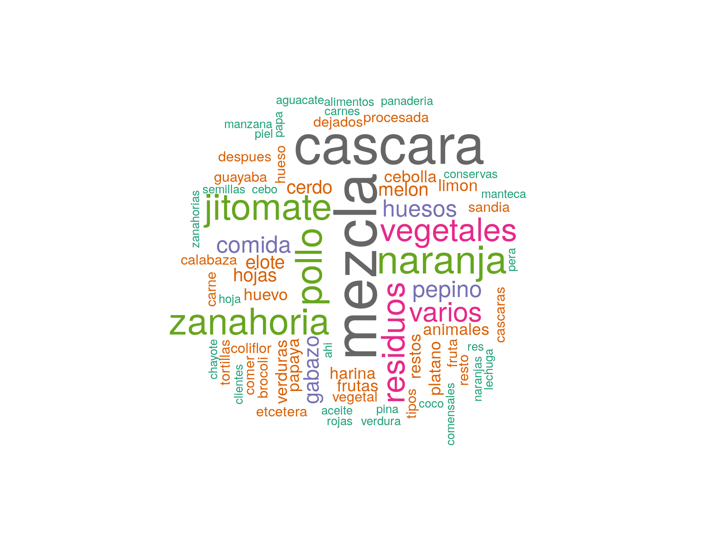
Que tienen las siguientes frecuencias:
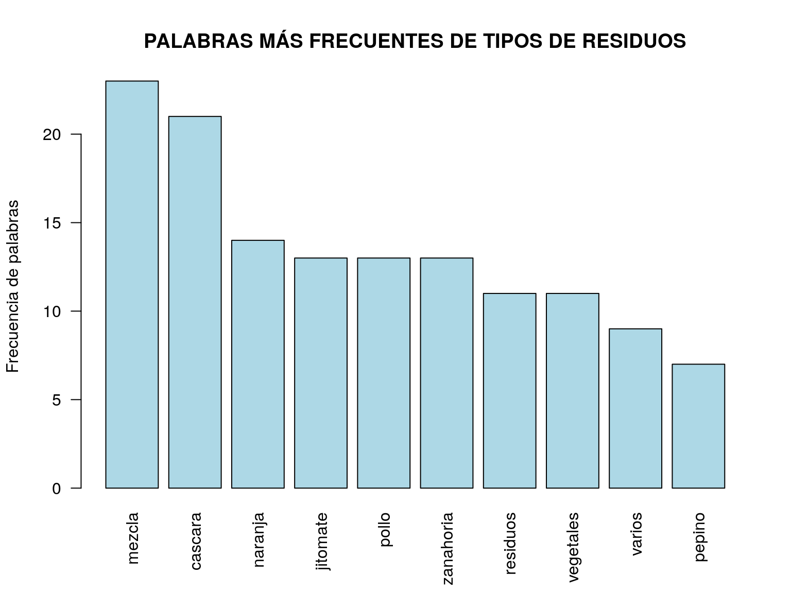
Del análisis de estros textos, pueden obtenerse elementos para construir categorías de respuesta precodificadas para la captación de los residuos de forma más específica.
En este punto del análisis, es necesario hacer mención especial de la empresa empacadora de verduras y frutas congeladas “La Huerta”, la cual proporcionó información muy precisa sobre los residuos que genera. La importancia de este tipo de unidades de observación es que por sí mismas constituyen un sub-universo de estudio de gran interés para el proyecto. De este modo, por el hecho de que los valores de residuos declarados en dicho establecimiento se encuentran muy por encima del promedio del resto de las unidades de observación (el orden de magnitud de sus residuos es de miles de toneladas anuales, y en el caso de las cosechas no levantadas, mensuales), sus datos no deben ser considerados junto con el resto de establecimientos, ya que su comportamiento atípico sesgaría demasiado los estadísticos de la muestra.
Los datos captados en dicho establecimiento fueron los siguientes:
Datos captados sobre residuos generados por La Huerta
| Tipo de residuo | Contenido del residuo | Cantidad | Unidad | Cantidad del residuo que es no comestible | Unidad de Resid No Comest | Periodo | Causa del desecho | Destino |
|---|---|---|---|---|---|---|---|---|
| vegetal crudo | Mezcla de vegetales | 11224 | toneladas | 11224 | toneladas | Anual (2019) | Parte de proceso de corte | Composteo, procesos aeróbicos |
| vegetal procesado | Mezcla de vegetales | 8900 | toneladas | 8900 | toneladas | Anual (2019) | Proceso | Composteo, procesos aeróbicos |
| otro | Varios | 50 | kilogramos | 50 | kilogramos | Anual (2019) | Producto Caduco | Otro destino (destrucción) |
| otro | Cosecha no levantada | 20000 | toneladas | 20000 | toneladas | Anual (2019) | Se pierde la cosecha | Otro destino (se queda en la tabla) |
En virtud de lo anterior, se excluye en lo sucesivo para todos los cálculos sobre cantidades de residuos, la información proporcionada por dicha empresa.
Una de las variables de mayor interés de la encuesta, por ser uno de los objetivos de la misma, es la estimación de la cantidad promedio de residuos de alimentos generados en las unidades de observación. Para obtenerlo, es necesario realizar el cálculo de los kilogramos por semana que se declaran como residuos y promediarlo.
Promedio estimado de residuos alimenticios (kg/semana):
## [1] 79.08867
La gráfica de dispersión de las cantidades declaradas de residuos alimenticios ilustran respecto a la existencia de algunos puntos con valores muy altos que sesgan el promedio.
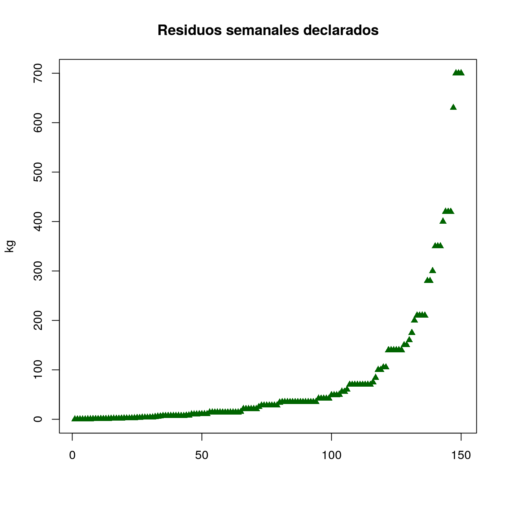Fuente: INEGI. Prueba Piloto 01 ERAMO 2020
La misma gráfica, pero diferenciada por tipo de residuo generado muestra lo siguiente:
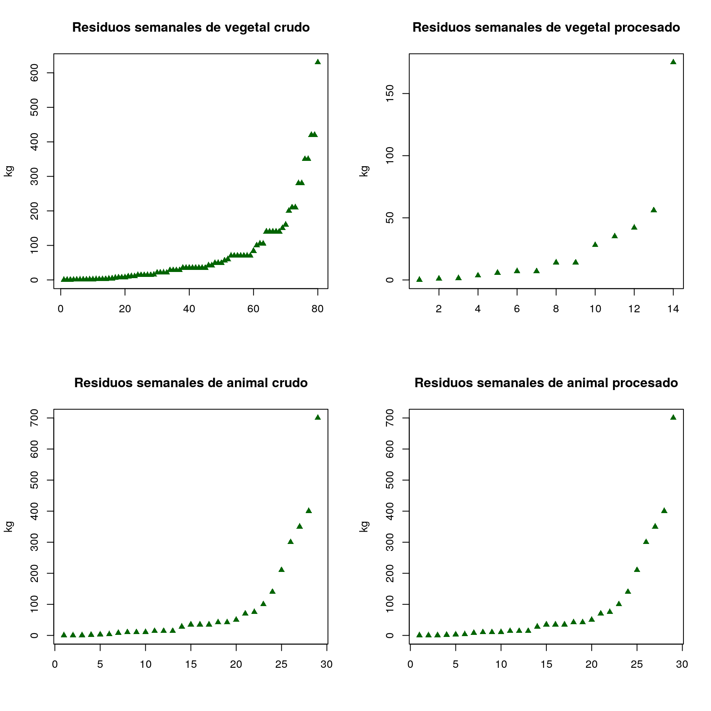
Un análisis más a fondo de los tipos de residuos requiere observar su comportamiento por tamaño del establecimiento. La siguiente gráfica nos muestra dicho comportamiento. En particular, no parece haber mucha diferencia entre la cantidad de residuos declarados en función del tamaño del establecimiento (el valor por encima de la tendencia general en el caso de la categoría 31 a 50 personas, corresponde a un solo punto, por lo que no puede ser tomado como tendencia).
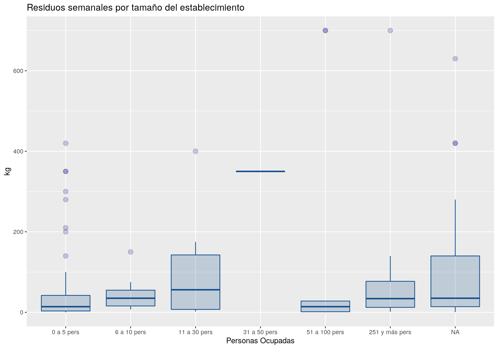
Fuente: INEGI. Prueba Piloto 01 ERAMO 2020
En el caso de la cantidad de residuos semanales por tipo de unidad de observación, sí parece haber algunas tendencias.
Fuente: INEGI. Prueba Piloto 01 ERAMO 2020
En particular, destacan los comercios al por mayor de carnes y verduras, así como los comercios de alimentos en supermercados. Llama la atención también la dispersión de cantidades declaradas en el ramo de restaurantes.
Finalmente, al comparar las cantidades de residuos por sector de actividad económica, parece haber una clara tendencia a una mayor generación de residuos para los establecimientos del sector primario (téngase en cuenta el caso de “La Huerta”, cuya producción de residuos es mucho mayor que las que aquí se muestran).
Fuente: INEGI. Prueba Piloto 01 ERAMO 2020
Esta variable decidió capturarse de modo abierto, a fin de dejar en manos del informante toda la gama de respuestas posibles. Con ello, se tiene la posibilidad de construir categorías más cercanas a las posibles respuestas de los informantes para un segundo evento de la encuesta.
El análisis de los textos vertidos en dicha variable revela que un buen porcentaje de los informantes desechan residuos de alimentos como parte del proceso de limpieza o preparación de los mismos, o bien se trata de bagazo o cáscaras que no son comestibles. Solamente un pequeño porcentaje de respuestas menciona que se tratan de desechos o residuos que los clientes no consumen en su totalidad, por lo que ya no son aprovechables para consumo humano. Se presenta una nube de palabras que nos da una idea de conceptos clave al respecto.
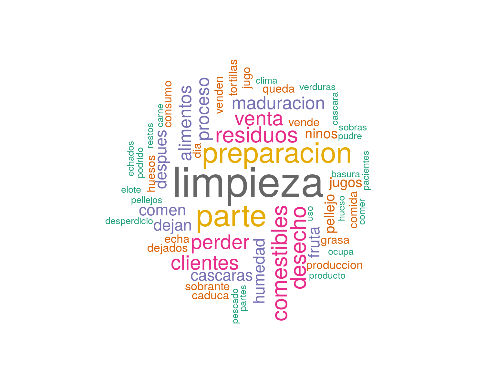
Cuyas frecuencias son:
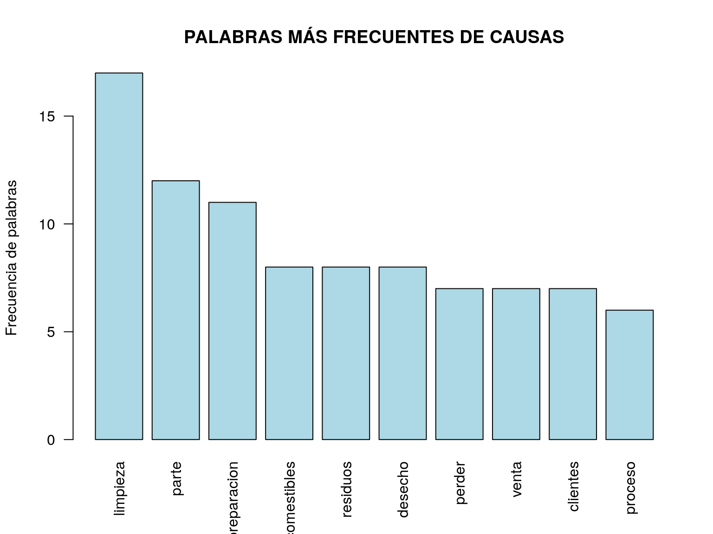
Una adecuada observación y clasificación de las respuestas, proveerá una primera versión de categorías precodificadas para usarse en la siguiente prueba.
En cuanto a los destinos declarados, esta pregunta estaba precodificada, y los resultados arrojan la mayor frecuencia en la categoría Otro destino, seguida por Basurero / desperdicio / desecho y Alimentación animal.
Fuente: INEGI. Prueba Piloto 01 ERAMO 2020
En este contexto, dada la frecuencia de respuesta de la opción Otro destino, se vuelve relevante analizar los textos capturados en dicho campo. La herramienta de análisis de textos arroja la siguiente nube de palabras:
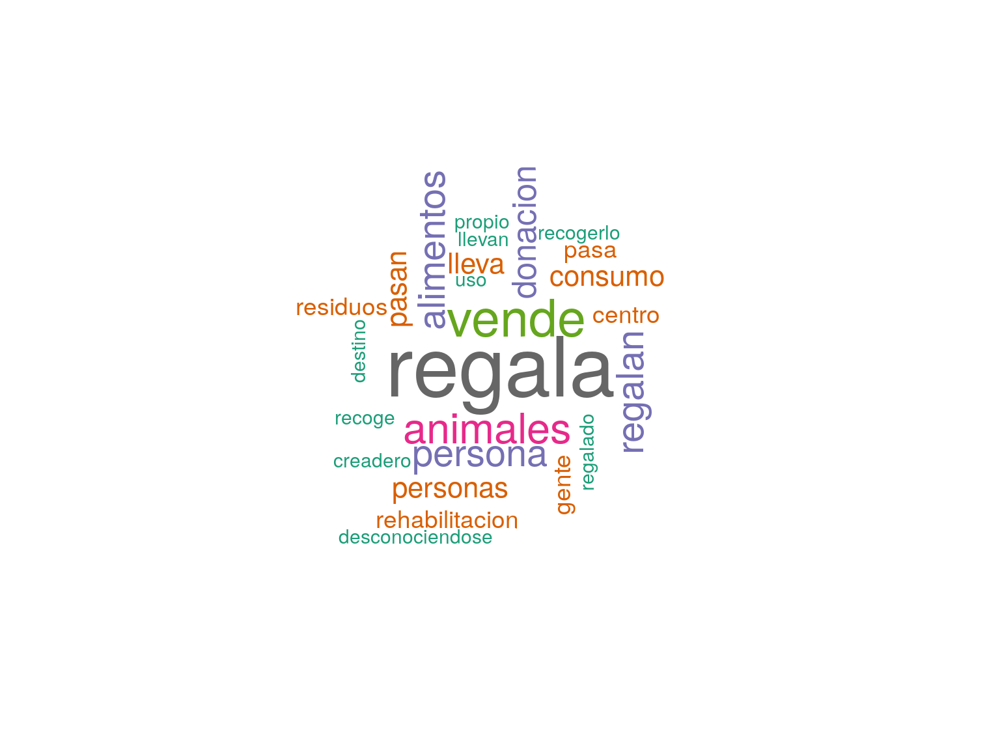
Al visualizar las frecuencias de palabras, tanto de esta como de otras preguntas, se hace evidente que se deben crear nuevas categorías para un ejercicio futuro, por ejemplo, “Lo regala/lo dona” o “Lo vende”. Una recodificación del resto de declaraciones incrementaría sin duda algunas de las frecuencias ya existentes, mientras que se hace necesario revalorar la permanencia de otras, como la de “Alcantarillado”.
Como en todo cuestionario, se permite al entrevistador realizar la captura de información complementaria o adicional acerca de detalles sobre la información captada, que a manera de metadatos de campo, permitan aclarar o comprender ciertas situaciones observadas durante la entrevista, que no pueden ser captadas en ninguna variable prevista por el cuestionario mismo.
Es así que, previamente a la tarea de clasificar y categorizar los textos capturados en este campo destinado a las observaciones, se puede adelantar una primera versión del análisis de frecuencias de palabras en el texto, para dar una idea rápida sobre los contenidos de los comentarios. Los resultados se muestran en la nube de palabras siguiente.
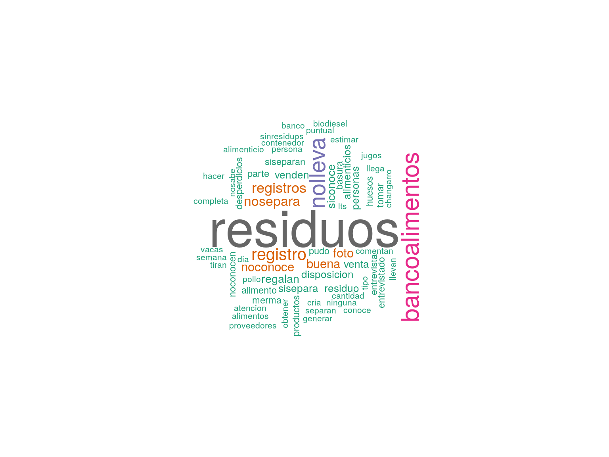
Es importante analizar los tiempos de entrevista para una prueba piloto inicial como la de este ejercicio. Conocer los tiempos que un entrevistador requiere para obtener la información en una entrevista, permitirá una planeación realista y objetiva de las cargas de trabajo en un levantamiento definitivo.
La distribución de tiempos de entrevista se muestra a continuación.
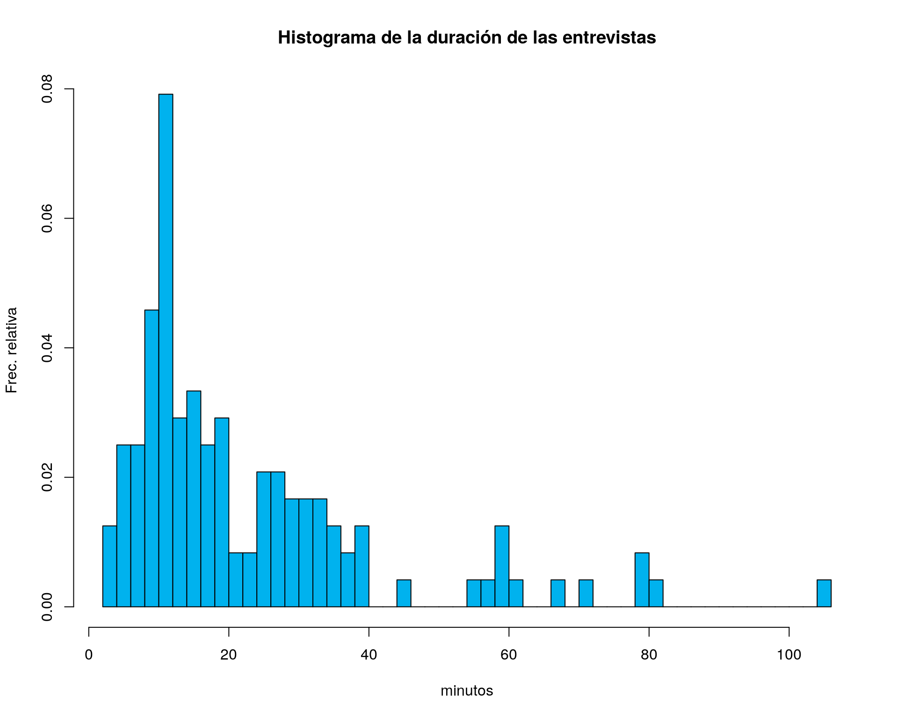
De la misma forma, se aprecian diferencias cuando el comparativo se realiza entre las unidades de observación agrupadas por tipo de actividad.
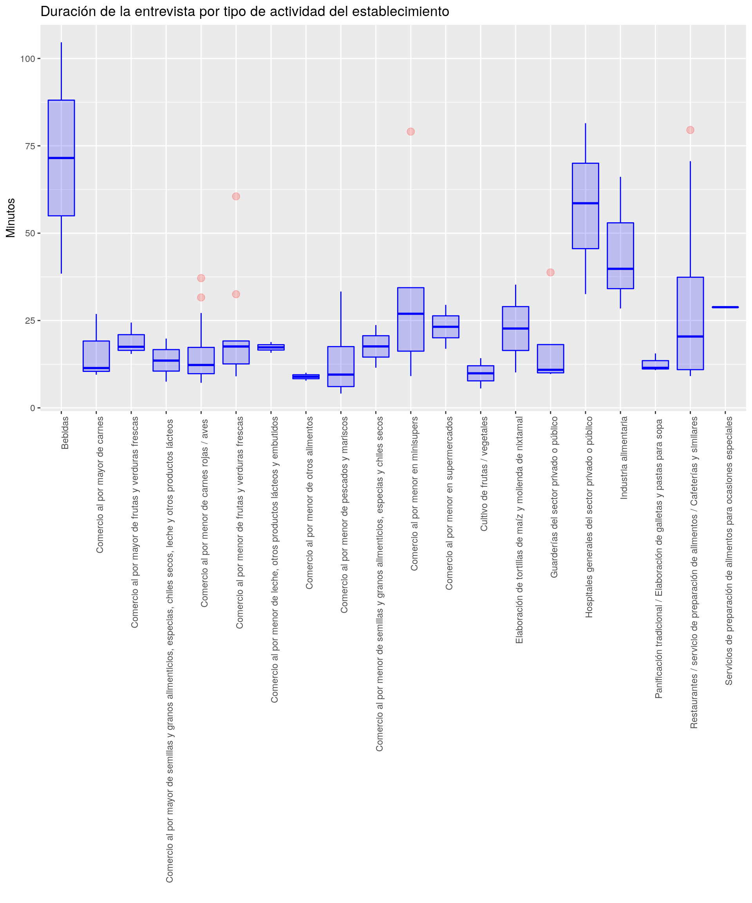
Destacan los tiempos de entrevista de los hospitales y de las empresas de la industria alimentaria, principalmente.
Por último, es de destacar las potencialidades de R como SIG para lectura, visualización, procesamiento y análisis de datos georreferenciados. En el caso de los datos de este proyecto, se tomaron las coordenadas GPS de la mayoría de las unidades de observación visitadas, y con ello puede crearse un mapa con dichos puntos, donde es posible agregar pop-ups con cualquier de información.
Para generar los mapas en este ejemplo, se usa la librería leaflet (y sus dependencias), la cual enlaza las coordenadas y proyecciones con una base de OpenStreetMap, el cual es un proyecto abierto y colaborativo que brinda herramientas gratuitas para geoprocesamiento, y no tener que depender de costosos programas SIG de licencia como ArcGIS.
Mapa de Establecimientos Entrevistados en Aguascalientes en la PP ERAMO 2020